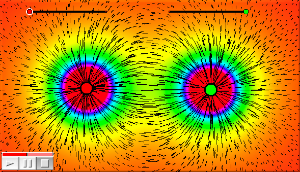

simulation()addforce(<mass>,<vec>)Integration Tick スロットに置かなければなりません。setforce(<mass>,<vec>)Integration Tick スロットに置かなければなりません。force(<vector>)force 演算子は、CindyLab におけるシミュレーションと密接な関係があります。それは、特定の場所で粒子に及ぼす力をテストするのに使うことができます。ベクトル drawforces 演算子と force 演算子のカラープロットを使って描かれました。２つの電荷の力の場と、電磁場の強さを示しています。 |
A.charge=(|C,G|-3)*3; B.charge=(|E,H|-3)*3; f(x):=max((0,min([x,1]))); colorplot([0.1,0.1,0.1]+hue(f(abs(force(#)/3))),(-10,-10),(20,10)); drawforces(stream->true,move->0.2,color->[0,0,0],resolution->10);
force((0,0),charge->2) は、電荷2，質量0，半径0の粒子で、点 point [0,0] の力をテストします。
Page last modified on Tuesday 26 of July, 2011 [12:20:33 UTC].
The original document is available at
http://doc.cinderella.de/tiki-index.php?page=Interaction%20with%20CindyLabJ